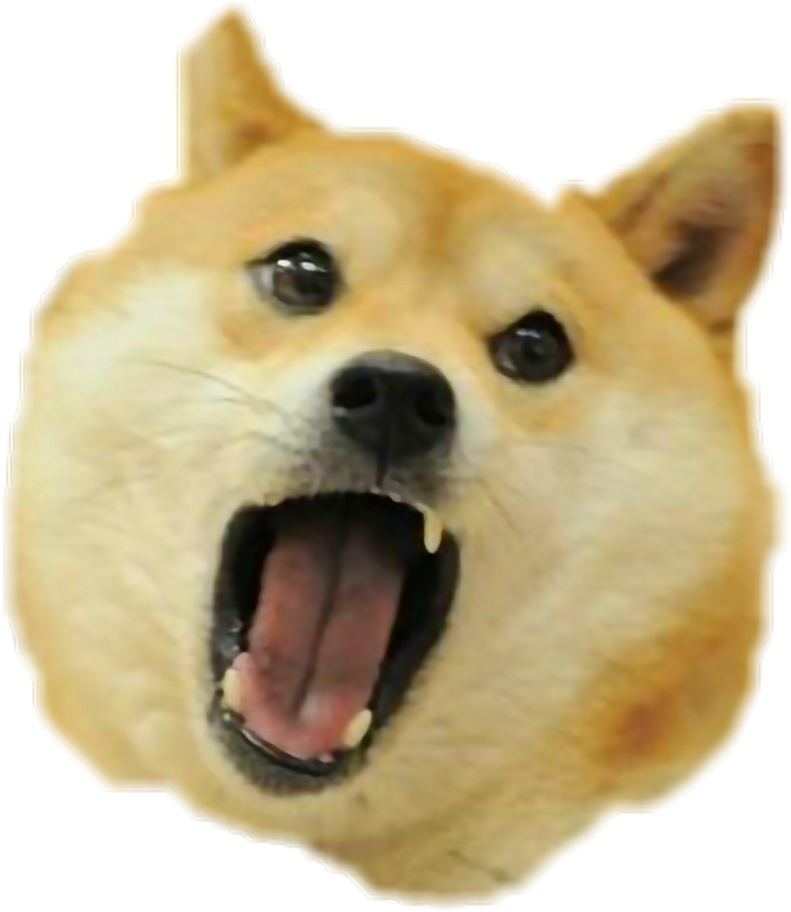
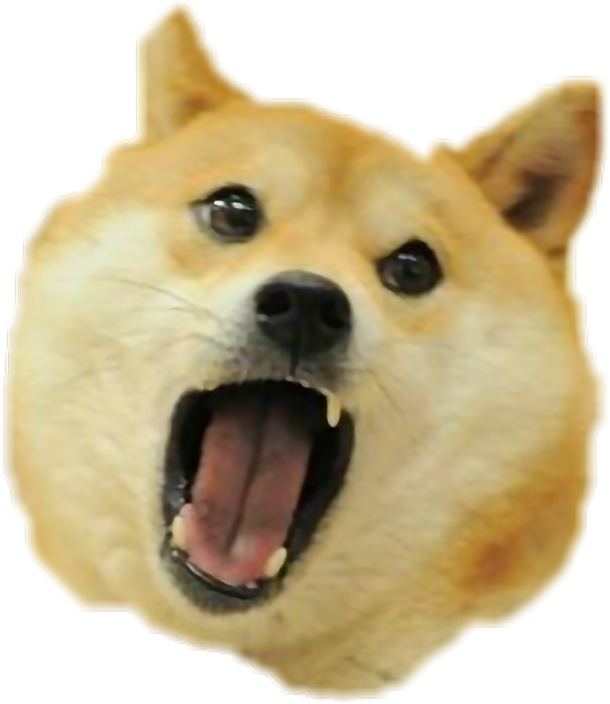
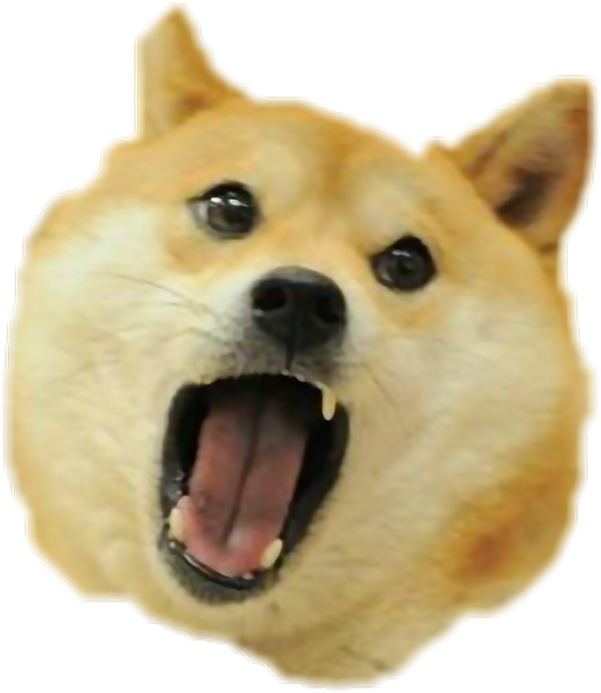
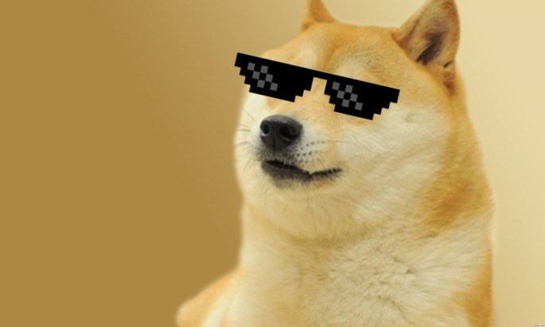
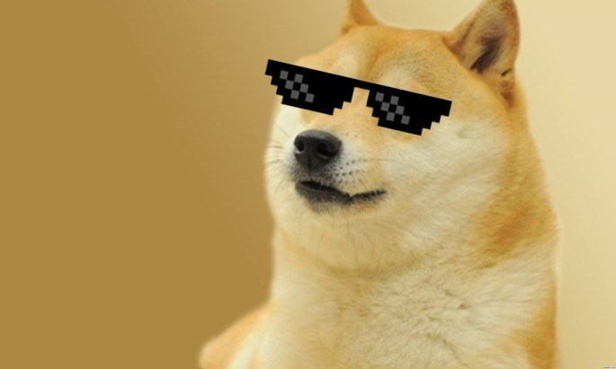

O Formato PNG vem de (Portable Network Graphics) desenvolvido pela W3C surgindo em 1996 como subistituto do GIF.O PNG permite comprimir as imagens sem perda de qualidade e retirar o fundo de imagens com o uso do canal alfa. O canal alfa, diferentemente da transparência do GIF, é capaz de definir o nível de opacidade de cada pixel, adequando-se a qualquer fundo de um site ou apresentação, sem serrilhamento, algo que não se consegue com os outros formatos populares. Por isso é um formato válido para imagens que precisam manter 100% da qualidade para reuso. Pode ser usado na maioria dos programas de edição de imagens como o Adobe Fireworks (proprietário) e o GIMP (livre).Veja Mais...

JPG (ou JPEG) é um método comum usado para comprimir imagens fotográficas. O grau de redução pode ser ajustado, o que permite a você escolher o tamanho de armazenamento e seu nível de compromisso com a qualidade da imagem. Geralmente se obtém uma compressão pouco perceptível na perda de qualidade da imagem.Veja Mais...
 

Graphics Interchange Format ou GIF ( /dʒɪf/ JIF ou /ɡɪf/ GHIF, em português: formato para intercâmbio de gráficos) é um formato de imagem de bitmap que foi desenvolvido por uma equipe do provedor de serviços on-line CompuServe, liderado pelo cientista de computação americano Steve Wilhite em 15 de junho de 1987.O formato suporta até 8 bits por pixel para cada imagem, permitindo que uma única imagem faça referência à sua própria paleta de até 256 cores diferentes escolhidas no espaço de cores RGB de 24 bits. Também suporta animações e permite uma paleta separada de até 256 cores para cada quadro.Veja Mais...
SVG é a abreviatura de Scalable Vector Graphics que pode ser traduzido do inglês como gráficos vetoriais escalonáveis. Trata-se de uma linguagem XML para descrever de forma vetorial desenhos e gráficos bidimensionais, quer de forma estática, quer dinâmica ou animada. Umas das principais características dos gráficos vetoriais, é que não perdem qualidade ao serem ampliados. A grande diferença entre o SVG e outros formatos vetoriais, é o fato de ser um formato aberto, não sendo propriedade de nenhuma empresa. Foi criado pela World Wide Web Consortium, responsável pela definição de outros padrões, como o HTML e o XHTML.Veja Mais...